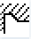
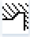
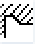
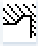

Freistich Form E (DIN 509) - CYCLE940
Parameter G-Code Programm (Freistich Form E) |
|---|
PL  | Bearbeitungsebene | | | T | | |
SC | Sicherheitsabstand | mm | | D | Schneidennummer
| |
F | Vorschub | * | | F
| Vorschub
| mm/min mm/U |
| | | | | S / V
| Spindeldrehzahl oder konstante Schnittgeschwindigkeit | U/min m/min |
| | | | |
Parameter | Beschreibung | Einheit |
|---|
TC | Name des Schwenkdatensatzes Hinweis: Das Auswahlfeld ist nur vorhanden, wenn mehrere Schwenkdatensätze eingerichtet sind. | |
Freifahren (bei ShopMill-Programm)
| nein Vor dem Schwenken wird nicht freigefahren Z  Freifahren in Richtung der Maschinenachse Z Z,X,Y  Bearbeitungsachsen vor dem Schwenken auf Freifahrposition fahren Werkzeugrichtung max.  Maximales Freifahren (bis Softwareendlage) in Richtung Werkzeugrichtung Werkzeugrichtung ink.  Inkrementales Freifahren (angegebener Freifahrweg, bis maximal Softwareendlage) in Werkzeugrichtung
Bei Freifahren in Werkzeugrichtung können im geschwenkten Zustand der Maschine mehrere Achsen verfahren. | |
ZR (bei ShopMill-Programm) | Freifahrweg - nur bei Freifahren inkremental in | mm |
Werkzeug über Beta- und Gammawinkel ausrichten |
β (bei ShopMill-Programm)
| Werkzeug mit Schwenkachsen ausrichten | Grad |
γ (bei ShopMill-Programm)
| | Grad |
Rundachsen direkt positionieren |
B1 (bei ShopMill-Programm) | Werkzeug mit Schwenkachsen direkt ausrichten:
Freie Eingabe des gewünschten Winkels
| Grad |
C1 (bei ShopMill-Programm) | Freie Eingabe des gewünschten Winkels
| Grad |
αC (bei ShopMill-Programm) | Drehposition bei einer Polstellung | Grad |
Hirth-Verzahnung
| Auf nächste Hirth-Verzahnung runden Auf Hirth-Verzahnung aufrunden Auf Hirth-Verzahnung abrunden
Hinweis:
Bei Maschinen mit Hirth-Verzahnung | |
Werkzeug
| Werkzeugspitze beim Schwenken | |
Vorzugsrichtung (bei ShopMill-Programm)
| Vorzugsrichtung der Schwenkachse bei mehreren möglichen Ausrichtungen der Maschine | |
Lage
| Lage der Bearbeitung Form E:       | |
| Freistichgröße nach DIN-Tabelle: z. B.: E1.0 x 0.4 (Freistich Form E) | |
X0 | Bezugspunkt X ∅ | mm |
Z0 | Bezugspunkt Z | mm |
X1
| Aufmaß in X ∅ (abs) oder Aufmaß in X (ink) | mm |
UX
| Planzug ∅ (abs) oder Planzug (ink) | mm |
* Einheit des Vorschubes wie vor Zyklusaufruf programmiert
Siehe auch:
Funktion - CYCLE940
Bearbeitungsebene, Fräsrichtung, Rückzugsebene, Sicherheitsabstand und Vorschub (PL, RP, SC, F)